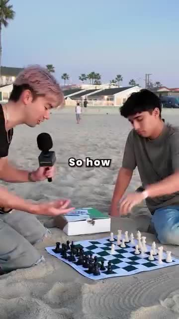
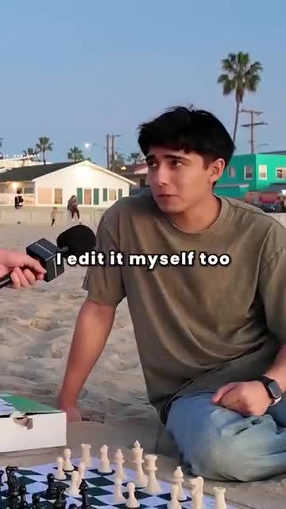
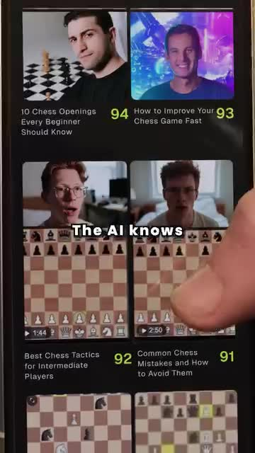
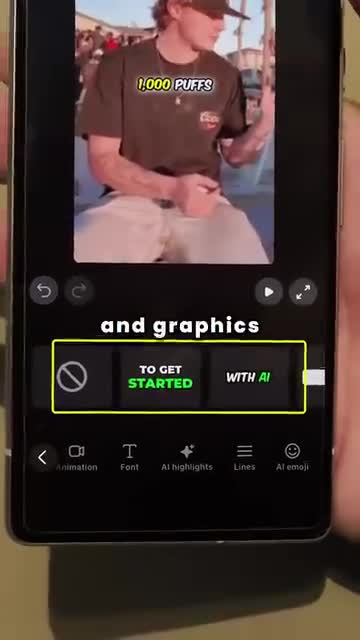
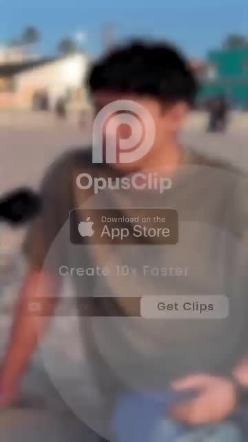
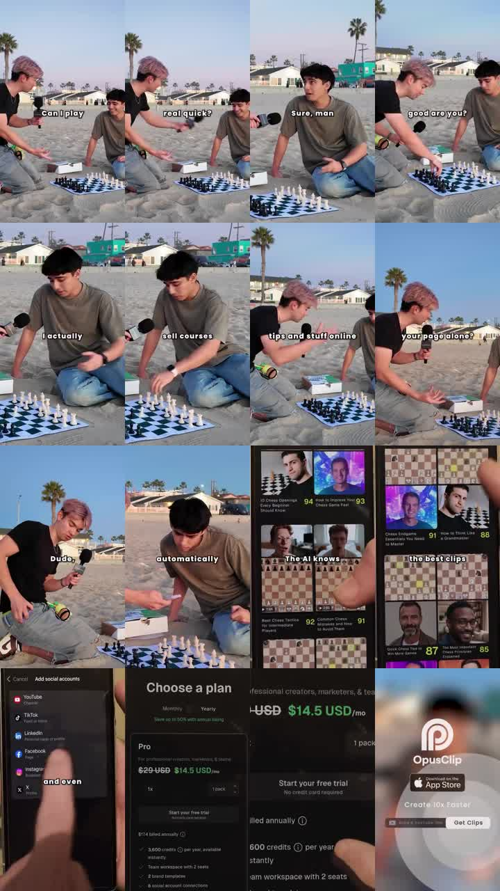

Hypothesis
If creators see a relatable expert struggle with editing and then watch AI rank, edit, and post clips, they will believe the app can save time and start a trial or download.
The creative hides an AI repurposing pitch inside a beach chess skit, then shows the app turning creator workload into ranked, edited, post-ready clips.
If creators see a relatable expert struggle with editing and then watch AI rank, edit, and post clips, they will believe the app can save time and start a trial or download.
Creators, coaches, course sellers, marketers, and small teams repurposing long-form content into short clips.
Cold prospecting with direct-response conversion cues, plus possible retargeting because pricing and trial details appear on screen.
App downloads, free-trial starts, pricing-page clicks, paid conversions, CAC, and ROAS.
Problem-aware to solution-aware: viewers know editing and distribution are slow, then see AI clipping as the answer.
medium
borrowed street-challenge hook
The viewer reads this as a native street-interview challenge, not an immediate SaaS pitch, so the setup earns a few seconds of curiosity.

creator identity qualification
The skit turns the chess player into a recognizable creator archetype: someone with expertise, content, and a distribution burden.

manual-work pain to tool reveal
The ad frames manual editing as the bottleneck, then creates a small reveal moment where the product feels like a hidden advantage.

ranked-output proof
The viewer is shown a concrete selection layer: the AI appears to find promising clips inside a larger content library instead of asking the creator to hunt manually.

workflow compression proof
The product proof expands from clip selection into polish and distribution, implying the tool covers the workflow after finding the clip.

mobile-install speed CTA
The close compresses the desired action into a mobile download and speed promise, but the '10x faster' claim is not substantiated inside the visible evidence.
The creative hides an AI repurposing pitch inside a beach chess skit, then shows the app turning creator workload into ranked, edited, post-ready clips.
The viewer moves from 'editing clips is a manual chore' to 'AI can pick, polish, and publish my best content from a phone.'
Translate the mechanism into a creator workflow demo where Submagic visibly turns raw footage into captioned, branded, zoomed, publish-ready clips.
The proof leans on interface speed and ranking scores, but it does not verify output quality, real time saved, or the 10x speed claim.
On a beach, a pink-haired interviewer with a handheld mic approaches a seated chess player and asks to play quickly; captions show 'Can I play', 'real quick?', and the player replying 'Sure, man'.
The viewer reads this as a native street-interview challenge, not an immediate SaaS pitch, so the setup earns a few seconds of curiosity.
Translate the mechanism into a creator workflow demo where Submagic visibly turns raw footage into captioned,...
3 Evidence sources
During the chess interaction, the interviewer asks about the player's skill and online work; sampled captions show 'So how', 'good are you?', 'sell courses', 'like, quick', 'all day, bruh', and 'your page alone?'.
The skit turns the chess player into a recognizable creator archetype: someone with expertise, content, and a distribution burden.
Translate the mechanism into a creator workflow demo where Submagic visibly turns raw footage into captioned,...
6 Evidence sources
The phone shows a grid of chess-video thumbnails with green scores such as 94, 93, 96, 94, 91, 88, 87, and 85; captions say 'The AI knows', 'so it chooses', and 'ranks them'.
The viewer is shown a concrete selection layer: the AI appears to find promising clips inside a larger content library instead of asking the creator to hunt manually.
Translate the mechanism into a creator workflow demo where Submagic visibly turns raw footage into captioned,...
5 Evidence sources
The closing screen overlays the OpusClip logo on the blurred beach scene with App Store copy, the line 'Create 10x Faster', and a 'Get Clips' button.
The close compresses the desired action into a mobile download and speed promise, but the '10x faster' claim is not substantiated inside the visible evidence.
Translate the mechanism into a creator workflow demo where Submagic visibly turns raw footage into captioned,...
4 Evidence sources

Use entertainment to earn attention, expose creator editing pain, prove workflow automation on a phone, then push an annual discount and free trial.
Make AI clip repurposing feel concrete, fast, and worth trying for creators who do not want to manually edit and post everything.
On a beach, a pink-haired interviewer with a handheld mic approaches a seated chess player and asks to play quickly; captions show 'Can I play', 'real quick?', and the player replying 'Sure, man'.
The viewer reads this as a native street-interview challenge, not an immediate SaaS pitch, so the setup earns a few seconds of curiosity.
borrowed street-challenge hook
Translate the mechanism into a creator workflow demo where Submagic visibly turns raw footage into captioned, branded, zoomed, publish-ready clips.
During the chess interaction, the interviewer asks about the player's skill and online work; sampled captions show 'So how', 'good are you?', 'sell courses', 'like, quick', 'all day, bruh', and 'your page alone?'.
The skit turns the chess player into a recognizable creator archetype: someone with expertise, content, and a distribution burden.
creator identity qualification
Translate the mechanism into a creator workflow demo where Submagic visibly turns raw footage into captioned, branded, zoomed, publish-ready clips.
The player says 'I edit it myself too'; the interviewer says 'check this out', hands over a phone, and the sampled captions move through 'all your clips' and 'What is this?'.
The ad frames manual editing as the bottleneck, then creates a small reveal moment where the product feels like a hidden advantage.
manual-work pain to tool reveal
Translate the mechanism into a creator workflow demo where Submagic visibly turns raw footage into captioned, branded, zoomed, publish-ready clips.
The phone shows a grid of chess-video thumbnails with green scores such as 94, 93, 96, 94, 91, 88, 87, and 85; captions say 'The AI knows', 'so it chooses', and 'ranks them'.
The viewer is shown a concrete selection layer: the AI appears to find promising clips inside a larger content library instead of asking the creator to hunt manually.
ranked-output proof
Translate the mechanism into a creator workflow demo where Submagic visibly turns raw footage into captioned, branded, zoomed, publish-ready clips.
The phone switches to an editing/export surface with a short video preview, a highlighted caption/graphic region, controls labeled for animation, font, AI highlights, lines, and AI emoji, then an 'Add post' screen with social account toggles and caption text.
The product proof expands from clip selection into polish and distribution, implying the tool covers the workflow after finding the clip.
workflow compression proof
Translate the mechanism into a creator workflow demo where Submagic visibly turns raw footage into captioned, branded, zoomed, publish-ready clips.
A plan screen shows 'Choose a plan', monthly/yearly toggle, 'Save up to 50% with annual billing', Pro pricing around $14.5 USD/mo, 'Start your free trial', 3,600 credits per year, team workspace with two seats, brand templates, and six social account connections.
The ad turns the demo into a direct-response offer and makes the trial, annual discount, and creator/team feature bundle visible.
discounted trial offer
Translate the mechanism into a creator workflow demo where Submagic visibly turns raw footage into captioned, branded, zoomed, publish-ready clips.
The closing screen overlays the OpusClip logo on the blurred beach scene with App Store copy, the line 'Create 10x Faster', and a 'Get Clips' button.
The close compresses the desired action into a mobile download and speed promise, but the '10x faster' claim is not substantiated inside the visible evidence.
mobile-install speed CTA
Translate the mechanism into a creator workflow demo where Submagic visibly turns raw footage into captioned, branded, zoomed, publish-ready clips.
| # | Claim | Proof type | Weakness | Evidence |
|---|---|---|---|---|
| 1 | The ad can hold attention as entertainment before revealing software. | street chess challenge setup with microphone, beach location, and dialogue captions | The chess setup is engaging but loosely related to clip editing until the creator identity is introduced. |
3 evidence IDs
|
| 2 | The target user has creator-workflow pain. | sampled captions about selling courses, running a page, and editing himself | The report has no complete transcript, so the exact conversation is reconstructed from sampled captions. |
3 evidence IDs
|
| 3 | The AI can identify and rank promising clips. | phone UI with chess-video thumbnails and green ranking numbers | The ranking scores are visible but not explained or validated against performance data. |
5 evidence IDs
|
| 4 | The product helps with editing polish and social posting. | editing screen with caption/graphic controls and an add-post screen with social accounts | The screens show capability cues, but the finished exported clip quality is not clearly demonstrated. |
4 evidence IDs
|
| 5 | The offer is positioned as a trial with annual discount and creator/team features. | pricing screen with Pro plan, free trial, annual billing savings, credits, seats, templates, and social connections | Pricing and credit details may be time-sensitive and were not verified outside the creative. |
5 evidence IDs
|
| 6 | The app promises faster clip creation. | OpusClip end card with App Store CTA and 'Create 10x Faster' copy | The 10x claim is visible as ad copy but not substantiated with measurement or comparison evidence. |
3 evidence IDs
|
Creators do not only want more editing features; they want the confidence that their best moments will be found, shaped, and posted without spending the whole day managing clips.
A skeptical viewer may like the skit but question whether the AI rankings produce genuinely better clips, whether posting is as automatic as implied, whether the 10x speed claim is measured, and whether the visible price or plan details are current.
If the ad opened directly on pricing, it would lose the native entertainment hook and creator empathy. If the demo showed an exported before-after clip before pricing, the quality proof would likely feel stronger. If the ranking screen were replaced by a generic AI claim, the mechanism would become less tangible. If the skit stayed in chess too long, the product reveal would feel disconnected from the editing pain.
Attention tension: the viewer expects a chess challenge, so the product reveal has room to surprise (ev_keyframe_001, ev_keyframe_003). Identity tension: the player is not just a chess player; sampled captions identify him as someone selling courses and running a page (ev_keyframe_006, ev_keyframe_010). Labor tension: he says he edits it himself too, making the pain concrete before the phone demo appears (ev_keyframe_011, ev_keyframe_012). Proof need: the app must show more than generic AI, so the demo displays ranked chess clips, editing controls, and posting UI (ev_keyframe_015, ev_keyframe_018, ev_keyframe_019). Conversion tension: the ad asks for trial/download action after showing pricing, annual savings, credits, and App Store CTA (ev_keyframe_020, ev_keyframe_023, ev_keyframe_024).
| Time | Viewer state | Trigger | Evidence |
|---|---|---|---|
| 0.000-1.000 | watching a challenge | A beach chess scene and microphone approach create a familiar street-content setup. |
3 evidence IDs
|
| 1.517-7.584 | identifying the creator | The conversation shifts from chess skill to selling courses and running a page. |
3 evidence IDs
|
| 9.101-13.651 | recognizing the pain | The player says he edits himself and reacts to the phone reveal. |
3 evidence IDs
|
| 15.168-18.202 | evaluating AI selection | The app displays ranked chess clips and captions that say the AI knows, chooses, and ranks them. |
3 evidence IDs
|
| 19.718-21.235 | testing workflow completeness | The demo shows caption/graphic editing and an add-post screen, suggesting the workflow continues beyond clip discovery. |
2 evidence IDs
|
| 22.752-28.819 | conversion check | The creative shows plan pricing, free trial, annual savings, App Store CTA, and a speed promise. |
4 evidence IDs
|
| Dimension | Score | Weakness / next improvement | Evidence |
|---|---|---|---|
| Copycat Safety high confidence |
1/3 | The surface execution is tightly tied to OpusClip, the chess skit, and visible product UI; only the strategic mechanism should transfer. |
4 evidence IDs
|
| Cta Urgency medium confidence |
2/3 | The free trial, discount, and app CTA are visible, but there is no deadline or proof of urgency beyond offer framing. |
6 evidence IDs
|
| Pacing medium confidence |
2/3 | The ad covers many steps in 30 seconds; the proof is energetic but crowded. |
6 evidence IDs
|
| Problem Clarity medium confidence |
2/3 | The editing burden is visible, but the exact pain relies on sampled captions rather than a full transcript. |
3 evidence IDs
|
| Proof Specificity medium confidence |
2/3 | The UI proof is specific, but output quality, ranking method, and time-saved claims are not independently substantiated. |
6 evidence IDs
|
| Friction Reduction medium confidence |
3/3 | The workflow appears compressed from selection to posting, but the exported result is not shown clearly. |
4 evidence IDs
|
| Hook Strength high confidence |
3/3 | The street-challenge setup is native and clear, though it needs the creator-workflow pivot to justify the chess premise. |
3 evidence IDs
|
| Product Visibility high confidence |
3/3 | The product appears across ranking, editing, posting, pricing, and end-card moments. |
5 evidence IDs
|
The street challenge, large captions, quick human setup, and phone UI demo fit TikTok's native discovery patterns, with the caveat that product proof is crowded (ev_keyframe_001, ev_keyframe_015, ev_keyframe_018).
The beach skit, vertical captions, creator-workflow pain, and clean app CTA are Reels-compatible, especially for creator and marketer audiences (ev_keyframe_003, ev_keyframe_011, ev_keyframe_023).
The hook can work on Shorts, but the product reveal and pricing sequence may need a clearer before-after result to hold viewers through the full 30 seconds (ev_keyframe_015, ev_keyframe_020, ev_keyframe_024).
The demo and offer are suitable for Meta paid testing, but claims around AI ranking and 10x faster creation should be substantiated or softened for compliance and trust (ev_keyframe_015, ev_keyframe_024).
The creator-productivity problem can fit LinkedIn, but the beach chess skit and mobile app-store close feel more casual than a business feed usually rewards (ev_keyframe_001, ev_keyframe_023).